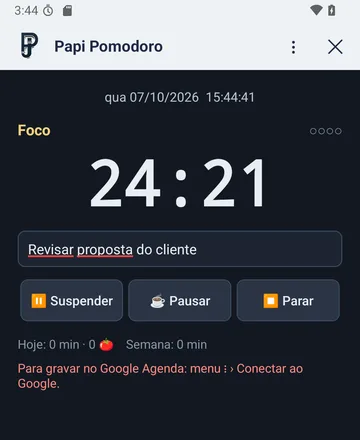
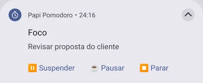

Foco e pausas
Ciclos de 25 minutos de foco, 5 de pausa e 15 de pausa longa a cada 4 pomodoros. Dá para pausar, pular a fase ou parar.
App grátis para Android
Concentre-se em uma tarefa por vez: 25 minutos de foco, 5 de pausa e, a cada 4 ciclos, uma pausa longa de 15. O celular toca um alarme no fim de cada fase, mesmo com a tela apagada, e o widget mostra o tempo na tela inicial.


Ciclos de 25 minutos de foco, 5 de pausa e 15 de pausa longa a cada 4 pomodoros. Dá para pausar, pular a fase ou parar.
Toca como despertador quando acaba o foco e quando acaba a pausa, até você silenciar. Funciona com o app fechado e a tela apagada.
O tempo restante aparece no widget da tela inicial e na notificação, com botões para iniciar, pausar e pular.
Quanto tempo de foco você teve hoje e na semana, e em quais tarefas.
Escolha a tarefa entre os seus eventos e tarefas do Google, e cada pomodoro concluído vira um registro numa agenda "Pomodoro" só dele.
Google Agenda: a ligação com o Google ainda está em liberação, por enquanto só para contas autorizadas. Sem ela o app funciona por completo: contador, alarmes, widget e relatório ficam no próprio celular.
Privacidade: o app não tem servidor próprio e não coleta dados. O registro dos pomodoros fica no celular e, se você conectar o Google, vai só para a sua própria conta. Para tirar o acesso, basta desinstalar o app ou remover a permissão em myaccount.google.com › Segurança.
Atualizações: baixe a nova versão nesta página e instale por cima; o histórico é mantido. Para conferir se o arquivo é o original, o SHA-256 da versão 1.1 é 16ca93cdd5de3c2077a1e59d806defcfd36c67385abe0cfc43f9979a3f9781c2.